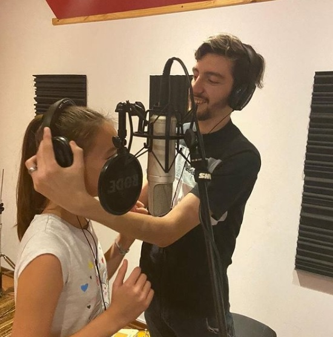
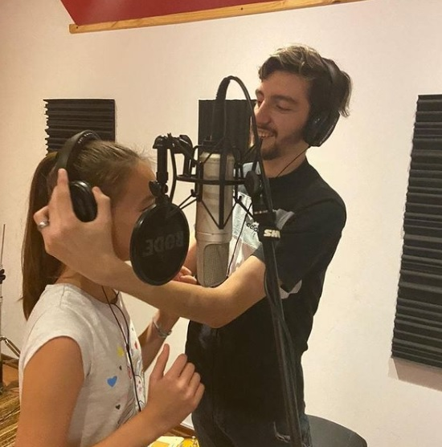

Juan Cruz Casabona
Clases de música
Videos
Anímate a entrar al mundo músical! Junto a mi vas a poder conocer un estudio de grabación y grabar un cover o tu propia canción!

 

¿Tenés alguna consulta? Escribila y te contactaré lo antes posible!